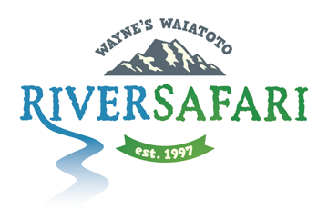

Fantail Falls
5 min
0.2 km

A short, easy bush walk to a view of Fantail Falls on the other
side of the Haast River.
Knights Point Lookout

Stop here for panoramic views of the wild coastline, rainforest
and ocean. Seals are often seen in the distance on the beach at
Arnott Point. Information panels tell of the landforms, early
travellers, the sea and marine mammals.
Dune Lake Walk
30 min
1 km

This walk winds through dense coastal forest stunted by wind. It opens out to provide magnificent photo opportunities from platforms overlooking the Dune Lake and the sweep of coastline southwest to Jackson Head.
Haast Heli Services
Services Available
Scenic Flights
General Charter
Kayaking & Rafting
Hunting & Fishing
Inquiries
More information

Waiatoto River Safari
Inquiries
More information
Fiordland Crested Penguin (Tawaki)

The Fiordland crested penguin or tawaki, is one of the rarest of
New Zealand’s mainland penguins.
The current tawaki population is between 2,500 and 3,000
breeding pairs and has been in decline since the 1950s.
Advisory
Fiordland crested penguins are sensitive to human disturbance
particularly at breeding and moulting sites, so please keep your
distance and move away if they seem stressed. Both adults and
chicks are vulnerable to dogs.
TODO: schedule